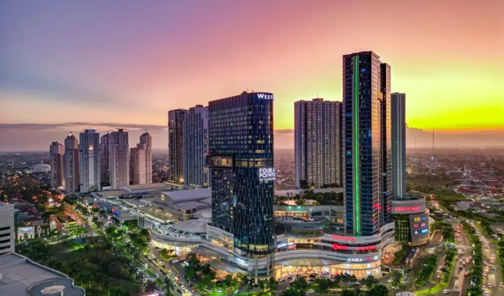
Pakuwon Trade Center

Graha Natura
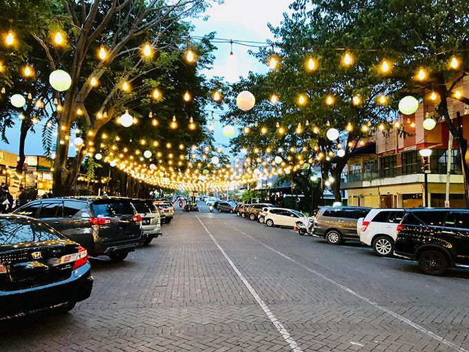
G-Walk Citraland
Surabaya’s curated destinations • Culinary spots • Hidden gems
EXPLOREWest Surabaya is more than just a geographical space; it is a living canvas that captures the shifting tides of time. Through the Aurum West Trip, we invite you on a journey that goes beyond mere destinations. An in-depth exploration to reinterpret how culinary acculturation, architectural transformation, and lifestyle evolution intertwine to shape the new identity of Surabaya’s community in the modern era. Here, every corner of the city is a dialogue between a grounded past and futuristic aspirations for the future. We trace the paths where traditional flavors blend with urban culinary aesthetics, and observe how the city’s dynamic spatial structure reflects a community that is constantly moving forward. This journey is our effort to document the authentic face of West Surabaya, a celebration of modernity that remains rooted in local values. Welcome to a journey exploring the dynamics that shape the pulse of Surabaya today.




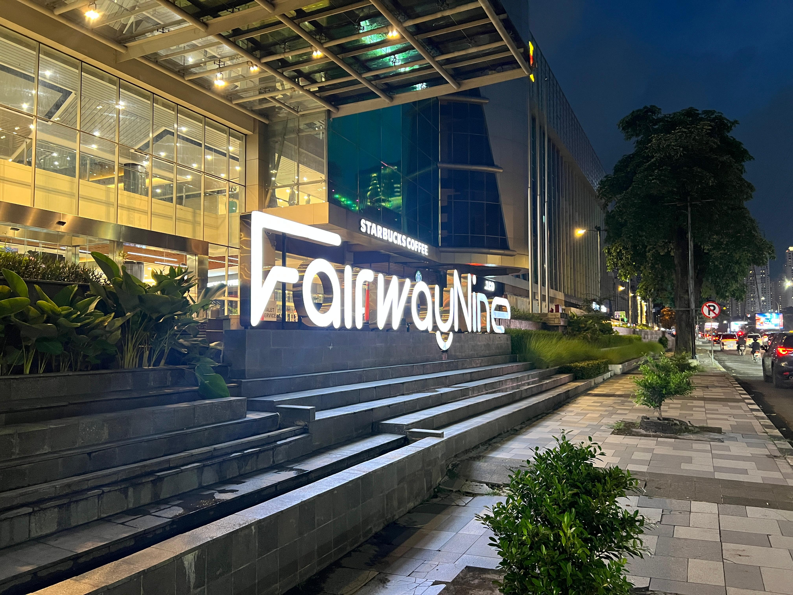


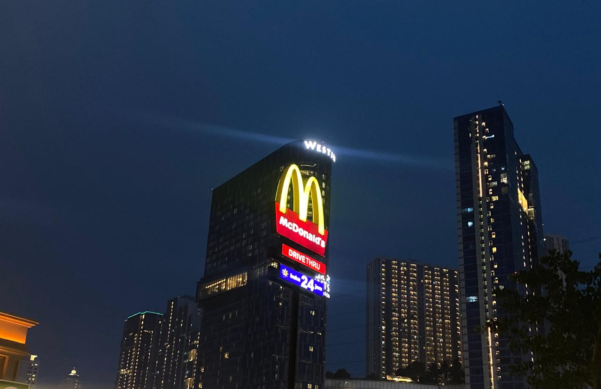
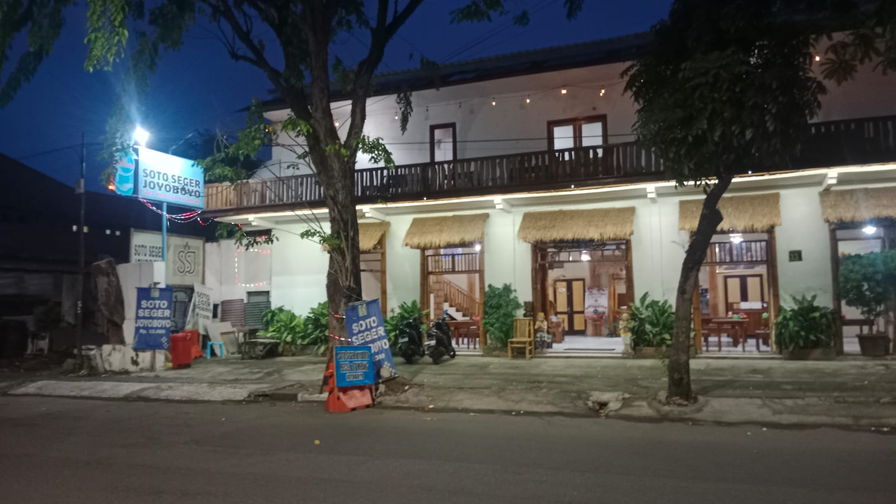
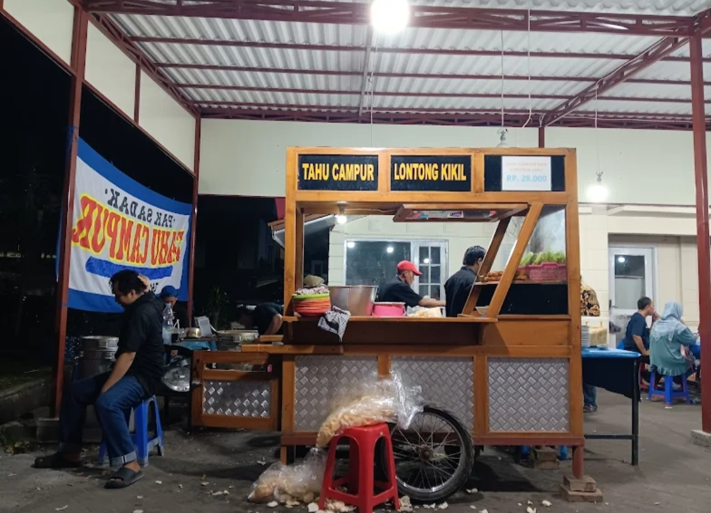


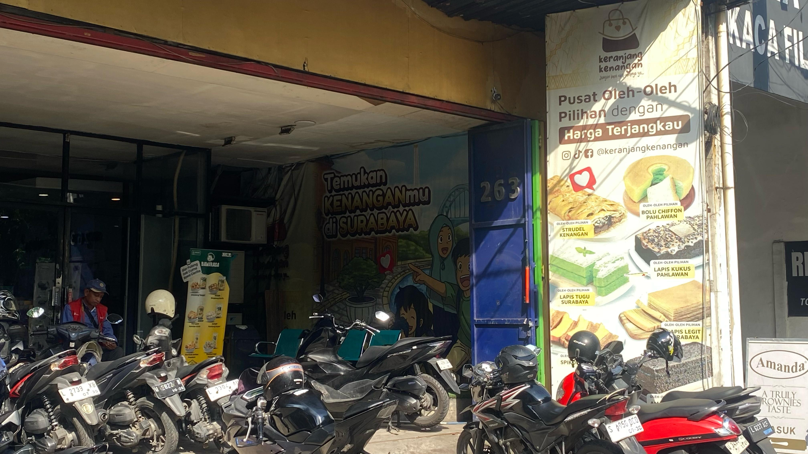
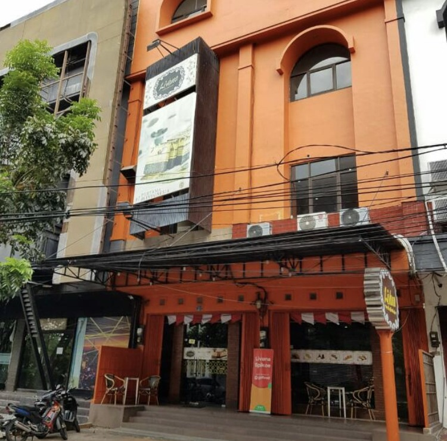


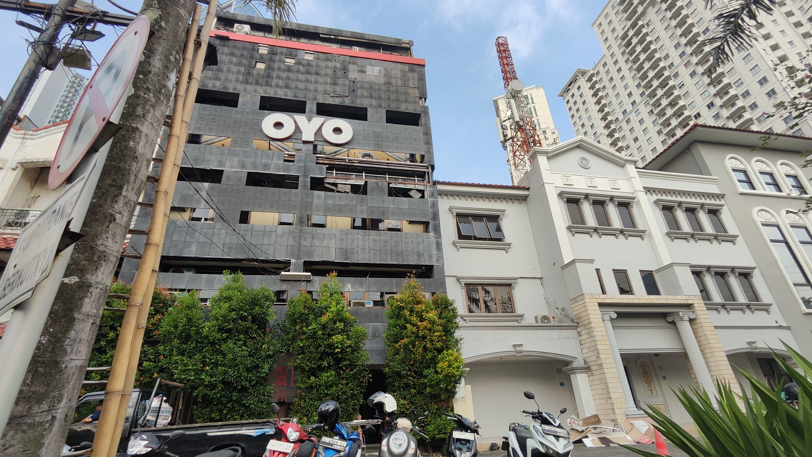

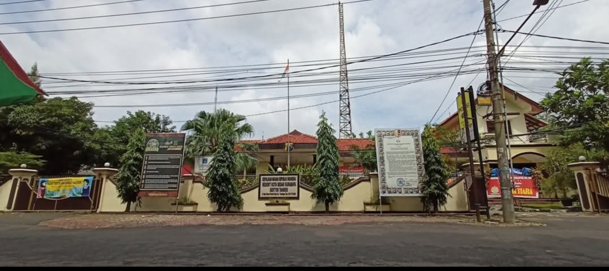
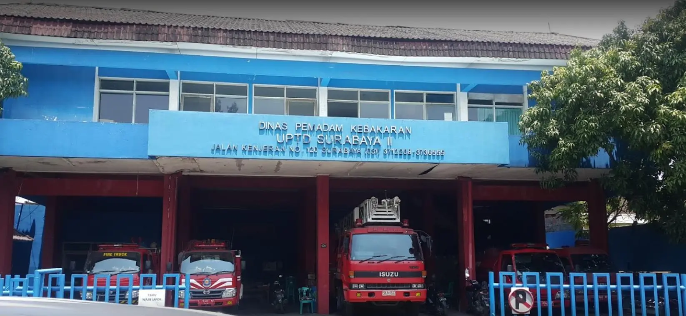

Description goes here.